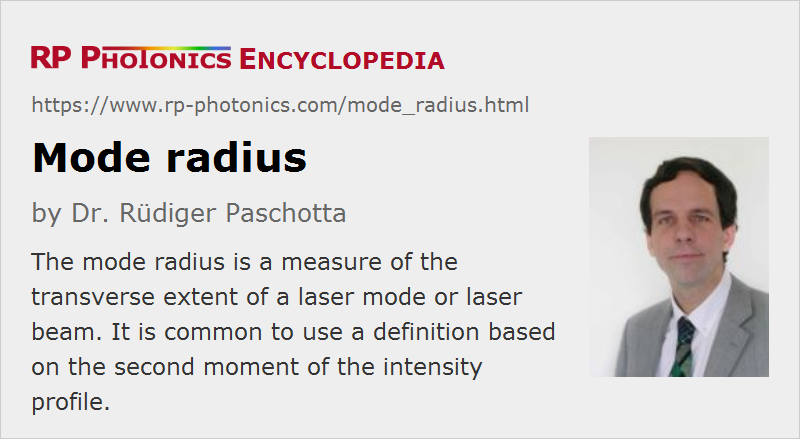

Mode Radius
Acronym: MFD = mode field diameter = twice the mode radius
Definition: a measure of the transverse extent of a laser mode or laser beam
Alternative term: mode field radius
German: Modenradius
Category: fiber optics and waveguides
Units: m
How to cite the article; suggest additional literature
Author: Dr. Rüdiger Paschotta
The transverse extent of the optical intensity distribution of a mode (e.g. of an optical cavity or a waveguide) is usually specified as a mode radius (or mode field radius). It is mostly of interest in the context of single-mode fibers, or for the fundamental mode of multimode fibers (mostly few-mode fibers). It can be defined in different ways, as described in the following section.
The mode diameter (or mode field diameter, MFD) is simply twice the mode radius.
It is not recommended to use the common terms mode size or spot size in a quantitative sense, because it is then not clear whether the radius or the diameter is meant.
Near-Field Based Definitions
Traditionally, the mode field radius (or diameter) was defined as for Gaussian beams, where the beam radius is the radius where the intensity has dropped to 1/e2 of the intensity on the beam axis. This is a suitable definition as long as the mode intensity profile has a close to Gaussian shape. For better accuracy, one can then use a Gaussian fit and take its radius as the result, rather than directly applying the 1/e2 criterion to the mode intensity profile.
For modes with clearly non-Gaussian profiles, as occur for some fibers (e.g., many dispersion-shifted fibers), such methods are not suitable. A more accurate way of obtaining the near-field beam radius is then to apply the D4σ method (ISO Standard 11146) to the measured near-field beam profile. This technique is explained in the article on beam radius. It requires a high dynamic range and can profit from special smoothing techniques.
In any case, near-field measurement methods are used. For example, one may image the near field (i.e., the field distribution at a fiber end) onto a somewhat larger spot and scan that spot with a small photodetector.
Far-Field Based Definitions
It is quite common to measure the far field profile, i.e., the beam profile outside the fiber in a distance which is much larger than the Rayleigh length. This can be done e.g. with a camera mounted in some distance to the fiber end, or by scanning the far field with a small photodetector.
One can then calculate a near field mode radius (or diameter) from the measured angular width in the far field. The nowadays most common method is using the “Petermann II mode field diameter definition” [2, 3], assuming a radially symmetric fiber mode:
(There is also a Petermann I definition, which applies directly to the near field and agrees with the common D4σ definition of the beam radius.)
For fibers with close to Gaussian mode profiles, the near-field and far-field mode field diameters agree quite well, whereas in other cases the far-field values can be significantly smaller. Both values are relevant for coupling losses at fiber joints: the far-field mode radius is relevant for losses related to a transverse core offset, whereas the near-field mode radius is relevant concerning angular misalignment.
Indirect Measurement Techniques
There are also various indirect techniques for measuring the mode field diameter (or radius). For example, the transverse offset technique is based on measuring coupling losses between two pieces of single-mode fiber as a function of a transverse core offset. These are related to the far-field beam radius. Other techniques are based on variable aperture.
Marcuse Formula for the Mode Radius of a Step-index Single-mode Fiber
For step-index single-mode fibers, the mode radius may be estimated from the core radius a and the V number, using Marcuse's equation [1]:
This shows that the mode radius becomes smaller for higher frequencies, which have higher V values. The equation is fairly accurate for V values above 1. In the multimode range (V > 2.405), it applies to the fundamental mode.
There is also a modified formula for approximating the Petermann II mode field radius [4]:
This is accurate within 1% for V between 1.5, and 2.5, the range of highest practical interest.
Relation of Mode Field Radius and Effective Mode Area
It appears natural to relate the mode field radius to the mode area according to
and to call this the mode field area (MFA).
However, the effective mode area is actually defined differently:

Depending on the mode shape, the values from the two definitions can deviate substantially from each other. For calculating the effective mode area from the mode field diameter, one can thus apply a correction factor, which depends on the wavelength [6].
For judging the strength of fiber nonlinearities, the latter definition (effective mode area) is clearly more appropriate.
Relevance of the Mode Field Diameter
The mode field diameter (or radius) is relevant e.g. at fiber joints, where a mismatch of mode sizes and angular deviations can lead to substantial coupling losses. Note, however, that efficient coupling requires not only matching the mode field diameters, but of the complete mode profiles.
As mentioned above, the strength of fiber nonlinearities is determined by the effective mode area, which is not directly related to the mode field diameter according to the usual definitions.
Questions and Comments from Users
Here you can submit questions and comments. As far as they get accepted by the author, they will appear above this paragraph together with the author’s answer. The author will decide on acceptance based on certain criteria. Essentially, the issue must be of sufficiently broad interest.
Please do not enter personal data here; we would otherwise delete it soon. (See also our privacy declaration.) If you wish to receive personal feedback or consultancy from the author, please contact him e.g. via e-mail.
By submitting the information, you give your consent to the potential publication of your inputs on our website according to our rules. (If you later retract your consent, we will delete those inputs.) As your inputs are first reviewed by the author, they may be published with some delay.
Bibliography
| [1] | D. Marcuse, “Loss analysis of single-mode fiber splices”, Bell Syst. Tech. J. 56, 703 (1977), doi:10.1002/j.1538-7305.1977.tb00534.x |
| [2] | K. Petermann, “Constraints for fundamental mode spot size for broadband dispersion-compensated single-mode fibers”, Electron. Lett. 19, 712 (1983), doi:10.1049/el:19830485 |
| [3] | C. Pask, “Physical interpretation of Petermann's strange spot size for single-mode fibres”, Electron. Lett. 20 (3), 144 (1984), doi:10.1049/el:19840097 |
| [4] | C. D. Hussey and F. Martinez, “Approximate analytical forms for the propagation characteristics of single-mode optical fibres”, Electron. Lett. 21 (23), 1103 (1985), doi:10.1049/el:19850783 |
| [5] | M. Artiglia et al., “Mode field diameter measurements in single-mode optical fibers”, J. Lightwave Technol. 7 (8), 1139 (1989) |
| [6] | Y. Namihira, “Relationship between nonlinear effective area and modefield diameter for dispersion shifted fibres”, Electron. Lett. 30 (3), 262 (1994), doi:10.1049/el:19940149 |
See also: modes, Gaussian beams, beam radius, effective mode area, fiber joints, mode field converters, fibers, single-mode fibers, dispersion-shifted fibers, The Photonics Spotlight 2014-07-28
and other articles in the category fiber optics and waveguides
|  |
If you like this page, please share the link with your friends and colleagues, e.g. via social media:
These sharing buttons are implemented in a privacy-friendly way!